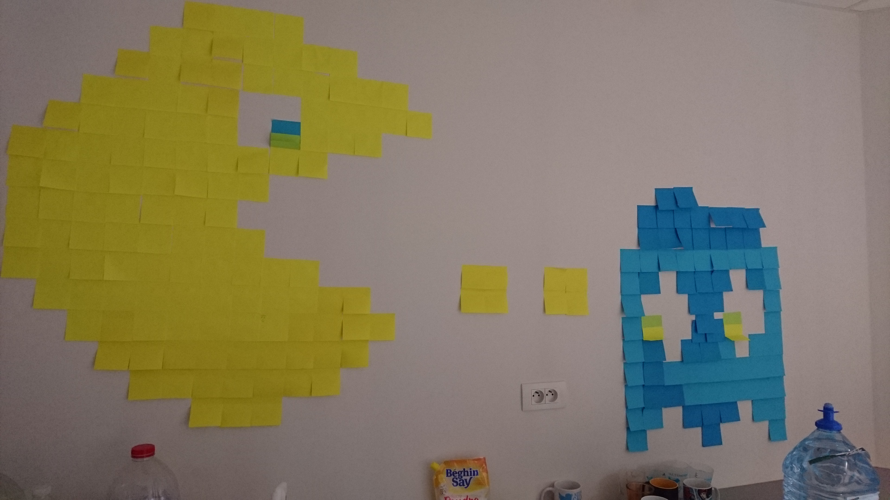

La Fondation Agir Contre l’Exclusion(FACE) est une fondation implantée dans une soixantaine de villes en France et, depuis juillet 2015, dans l’Allier sous le nom de FACE Territoire Bourbonnais.
Il s’agit d’un club d’entreprises qui lutte contre l’exclusion et a décidé comme première action de mettre en place une formation aux métiers du numérique, de 8 mois pour 20 – 25 personnes, afin de pallier une compétence en tension. Les entreprises ont du mal à recruter ces profils dont elles ont besoin. Il en manquerait aujourd’hui au moins 40 000 en France.
Dans le cadre de leur formation, les apprenant(e)s seront initié(e)s aux métiers de codeur/développeur informatique leur permettant ainsi d’aborder toutes les familles de langages de présentation, de langages de programmation ainsi que découvrir les outils de développeurs et d’être mis en situation pour les entreprises.
La seconde grande réalisation de Face territoire bourbonnais est l'ouverture en novembre dernier de la fabrique du numérique, labellisée « grande école du numérique ». 23 jeunes, et moins jeunes, suivent pour huit mois une formation dispensée par le Moulinois Julien Dugrais.
« Je ne veux pas faire d'eux les meilleurs codeurs du monde, mais des gens capables d'apprendre par eux-mêmes et de répondre ainsi aux besoins des entreprises », résume-t-il.
Le club d’entrepreneurs FACE veut développer l'emploi dans le numérique
Lancée il y a un an dans l'Allier, la Fondation Agir contre l'Exclusion (FACE) regroupe une trentaine d'entreprises bourbonnaises : « Notre vocation, c'est de mettre en œuvre des actions innovantes s'appuyant sur une participation active des entreprises, rappelle son président, Didier Luminet. Concrètement, nous allons favoriser l'insertion de personnes éloignées du marché du travail ou en quête de reconversion, en leur proposant des formations courtes et spécifiques répondant aux besoins de recrutements des entreprises. »
Après plusieurs mois de réflexions et d'études approfondies, le club d'entrepreneurs s'apprête à concrétiser un projet de grande envergure. La création de la Fabrique du numérique, une structure labellisée « Grande école du numérique » par le gouvernement.
Elle ouvrira en novembre dans les bâtiments de l'ESPE, à Moulins. Une vingtaine de personnes en recherche d'emploi ou en reconversion professionnelle ont été retenues pour suivre une formation de codeur en informatique Elles bénéficieront de six mois de cours gratuits et intensifs auxquels s'ajouteront deux mois de stage en entreprise.
Il n'y a pas de diplôme à la clef mais des perspectives réelles d'emploi, explique Didier Luminet : « Le métier de codeur est un métier en tension. Il y a énormément de besoins, notamment dans l'Allier où des entreprises recherchent activement des programmateurs en informatique. Grâce à cette formation, nous allons contribuer à répondre aux attentes du tissu économique, tout en permettant à des jeunes de s'engager dans un métier d'avenir. C'est toute la vocation de FACE ! ».
Une formation qui donnera aux élèves toutes les bases requises pour exercer leur futur métier. En six mois, ils apprendront les principaux langages informatiques pour être immédiatement opérationnels sur le marché du travail. Afin, par exemple, d'adapter des programmes pour des machines dans l'industrie, d'aider des sociétés à vendre leurs produits en ligne ou encore, pourquoi pas, pour créer leur propre start-up.
Le label « Grande école du numérique » assure à cette formation des financements de l'Etat. Mais FACE Territoire du Bourbonnais, qui bénéficie d'un budget de 200.000 € sur l'exercice 2016-2017 et a embauché trois permanents, ne compte pas en rester là. Elle travaille actuellement pour faire aboutir d'autres projets ambitieux.
THIS IS HOW WE DO IT !
- 